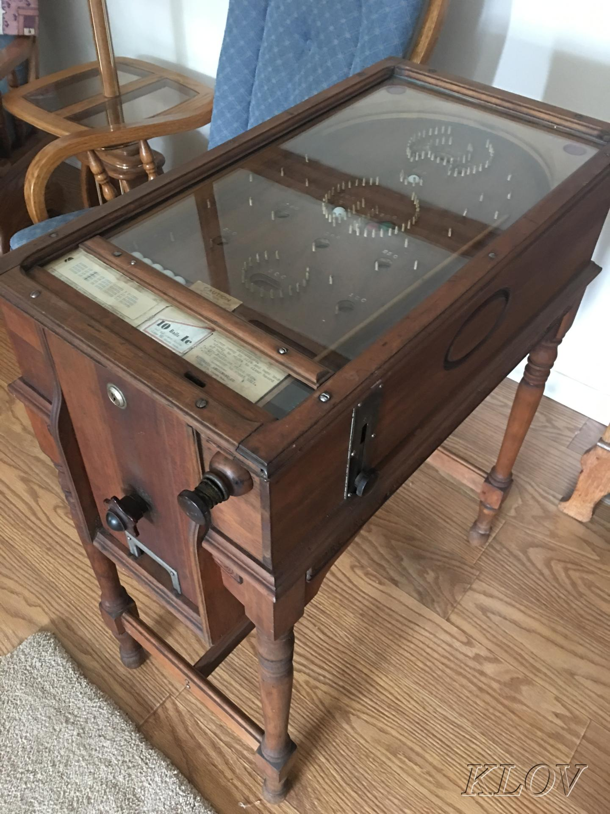

Electro-Mechanical(EM) Pinball machines were arguably the most successful pinball machines ever made. Although they may not have the fancy digital augments that modern pinball machines have, they definitely have a certain reliable, complex, and satisfying physical presence that other modern Machines dont quite match. Their Golden Age has generally been recognized as the time just after World War 2, between 1948 and 1958.
The original pinball machines didnt have flippers that could actually be activated and origniated in France as a game called Bagatelle. The pinball machine that most people think of, which has flippers isn't very close to the orignal pinball machine but does share some basic similarities. Pinball even has roots as a gambling game where a plunger was used to hit a steel ball bearing, and then the bearing would fall into a hole or other obstacle to score points, which could then be redeemed for cash or other prizes.

| Name of Machine | Flippers(Y/N) | Electrical(Y/N) | Coin Operated(Y/N) | Year Invented |
|---|---|---|---|---|
| EM Pinball Machine | Y | Y | Y | 1931 |
| Whiffle Board | N | N | Y | 1930's |
| Bagatelle | N | N | N | Late 18th Century |